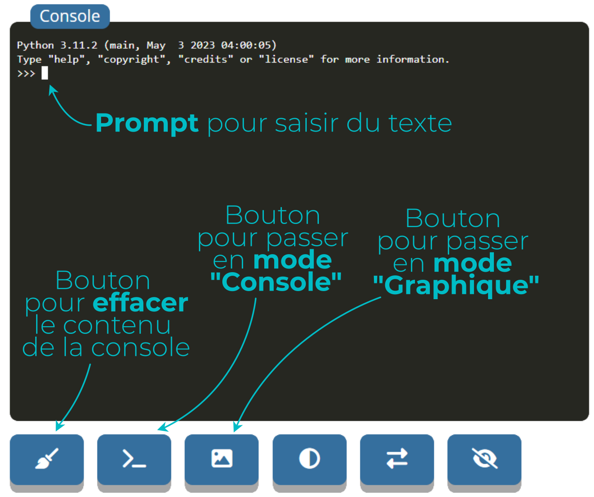

Découvrir les premières instructions en Python.
Dans cette première partie, vous apprendrez d'une part à rédiger puis lancer un script et d'autre part à afficher des données dans la console.
Quelques conseils pratiques:
- Cliquez d'abord sur le bouton
pour afficher la partie "Leçon" du cours. Passez ensuite à la partie de mise en pratique en cliquant sur le bouton
pour dérouler la partie "Activité".
- Quand le texte apparaît en manuscrit, cela signifie qu'il faut recopier ce passage dans votre cahier de SNT.
- Attendez d'y être invité pour commencer à modifier ou exécuter du code.
Bon courage et... bonne découverte de Python !!!
Leçon
Console, mais si l'on veut enregistrer toutes les actions dans un programme, on les rédige dans
un
script que l'on sauvegarde.
Activité
Script:
- Il s'agit d'un éditeur en ligne. Mais en fait n'importe quel traitement de texte peut servir à rédiger un
script, tant que l'extension du fichier est .py Télécharger le scriptCapytale.Console et les éléments présentés ci-dessous:

- C'est à partir de cette fenêtre que l'on peut interagir avec les programmes que nous allons créer et exécuter. En effet, dans la console python, on peut afficher des résultats mais aussi saisir du texte à la suite du prompt.
Console.
Leçon
Print et print ne sont pas compris
de la même manière par le programme.

 Activité
Activité
Script, repérez la ligne 22 du programme
.png)
Console Leçon
print(), on peut afficher un nombre
dans la console. .png)
 qui est
réservée aux textes.
qui est
réservée aux textes.
.png)

x mais l'astérisque * Activité
.png) dont les arguments sont vides (il n'y a
rien
entre les parenthèses). à chaque fois que
vous voulez vérifier que votre code fonctionne.
dont les arguments sont vides (il n'y a
rien
entre les parenthèses). à chaque fois que
vous voulez vérifier que votre code fonctionne.
#A. #B. #C. Leçon
print(), on peut aussi afficher du texte
dans la console. On utilise alors des guillemets autour de la
chaine de caractères.
.png) Activité
dont les arguments sont vides.
Activité
dont les arguments sont vides.
#A. 
#B. 
#C. O et de
X répété 496 fois
.png)
Cliquez au besoin sur le bouton
Ouvrir un script...pour récupérer votre fichier dans le dossierTéléchargement.